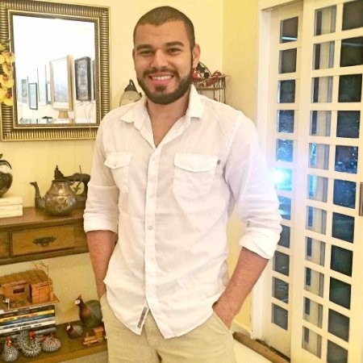

30 anos, Masculino
São Paulo - Sp
(11)97629-1058
caiofreire_1@hotmail.com
Estou buscando uma empresa que ofereça a oportunidade para demonstrar
meus conhecimentos agregando a equipe que fui selecionado, graduado em
arquitetura e urbanismo a mais de 6 anos e atualmente estudante
universitário no curso de análise e desenvolvimento de sistemas em busca
de uma oportunidade para entrar no mercado de tecnologia.
Com mais de 6 anos trabalhando em pequenas a grandes empresas com
atendimento direto ao cliente final e fornecedores.
Curso superior em Arquitetura e Urbanismo
Universidade Anhembi Morumbi - 2010 a 2016
Curso superior em Análise e desenvolvimento de sistemas
Universidade Estácio de Sá - 2020 a 2023
Coordenação de estagiarios; Criação de novos produtos; Acompanhamento de
obra; Acompanhamento e comentário de imagens finais; Projetos executivos
gerais.
- Microsoft Visual Studio Code, GitHub e Git
- Bootstrap
- Pacote Office
- Usuário de Windows e MacOSX
- Archicad, Autocad
- Eclipse, Pcharm, SublimeText
Intercâmbio de 6 meses em Los Angeles - com nível de Inglês
Intermediario
- Html, Css, Javascript
- Java, Java Web, Angular
- Python, Tkinter
- SQL - MySql, SQL Server